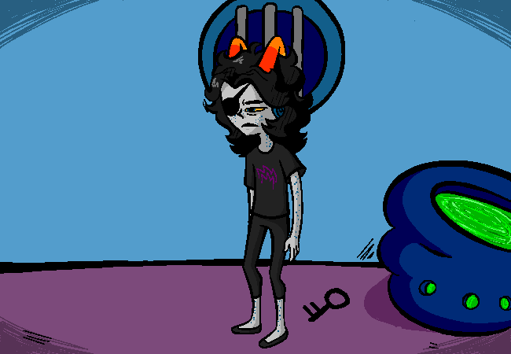

You flip your sprite.
You fail to realise you never placed your eye patch back on your right eye before flipping, thus
causing it to flip back onto the very same eye it was originally on.
You wasted an entire command for this.
Flip sprite to see out of right eye.

> Eat key.